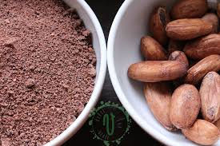
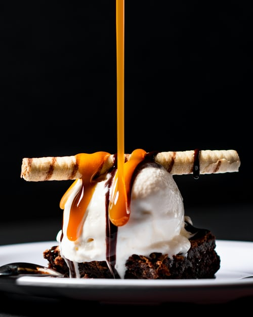
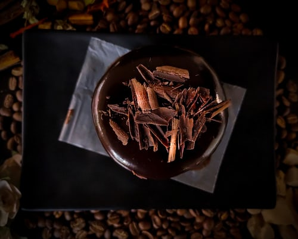
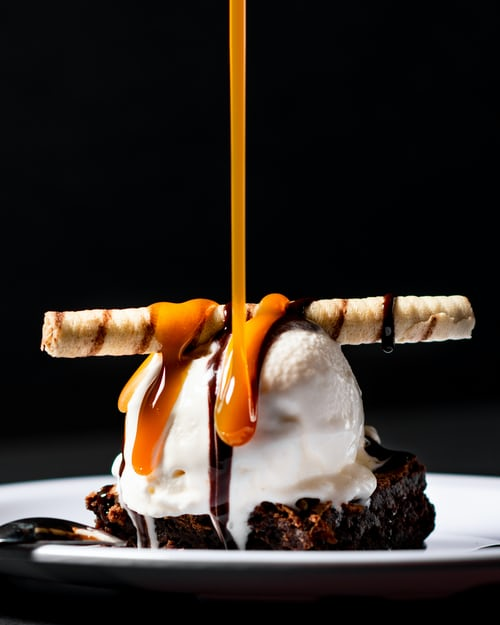
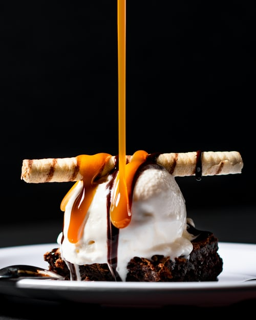
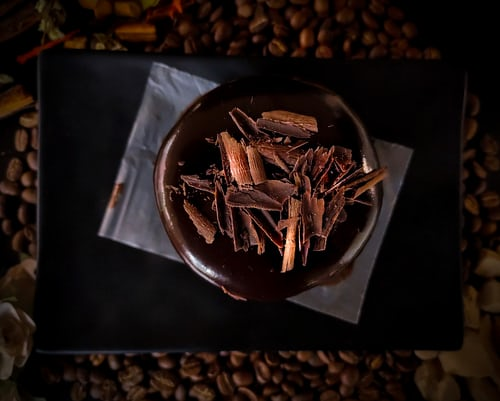
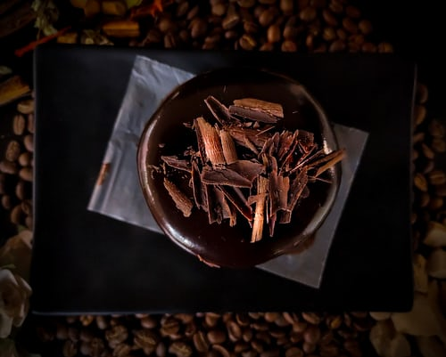

Chocolateria este locul in care iubitorii de ciocolata sunt invitati sa ia parte la
calatoria
gastronomica,
bucurandu-se de savoarea spectacolului gustativ oferit de ciocolata printr-o varietate impresionanta de
arome şi
gusturi unice.
Chocolateria este un producator de ciocolata artizanala premium , care ofera clintilor sai o variata gama de
produse
din ciocolata, alaturi de cele mai minunate experiente gastronomice.
Iubitorii de ciocolată au la dispozitie un numar impresionant de arome, gusturi si texturi ce acompaniaza
gustul
ciocolatei.
Semintele fermentate, inainte de a fi impachetate, trebuie sa fie uscate. Unii
fermieri folosesc echipamente
moderne
precum conducte fierbinti sau uscatoare pentru a accelera procesul. Multi dintre ei insa pur si simplu
le
lasa
la
uscat sub soarele tropical, imprastiind semintele pe tavi suprapuse sau saltele de bambus. Procesul de
uscare
dureaza de regula o saptamana iar greutatea semintelor scade la jumatate din greutatea initiala.
Procesarea incepe prin curatarea boabelor de cacao de orice impuritati inainte de a fi cantarite si
amestecate
cu
alte ingrediente in functie de reteta specifica. Apoi boabele sunt prajite la 120 grade C intre 30 de
minute
si
2
ore, pana cand se rumenesc si incep sa dezvolte aroma caracteristic.
2. Decojire, concasare si presare

In continuare boabele de cacao sunt decojite, pastrand doar miezul, care contine
unt de cacao aproximativ
53%.
Miezul este apoi zdrobit pentru a extrage untul de cacao, cunoscut si sub denumirea de masa de
cacao/ciocolata.
Aceasta este supusa unei presiuni puternice pentru a indeparta untul de cacao, care se scurge si se
foloseste
ulterior in procesul de fabricare a ciocolatei. Turta presata ramasa in urma extragerii untului de cacao
este
pulverizata si cernuta pentru a obtine pulbere de cacao.
Cojile boabelor de cacao sunt acum suficient de fragile pentru a putea fi vanturate. Instrumente
ascutite
deschid
invelisul boabelor si ventilatoare uriase inlatura cojile. Ramasitele boabelor de cacao numite “nibs”,
sunt
trecute
printr-o serie de site care le strecoara si le sorteaza in funcţie de marime.
3. Malaxare
Cacaua se obtine prin indepartarea partiala a untului de cacao, iar ciocolata de
consum, prin adaugarea
acestuia.
untul de caco se obtine prin inclzirea lichiorului si presarea acestuia intre niste valturi speciale,
care
il
transforma intr-o pasta fina. In acest stadiu amestecul este framantat cu malaxoarele pentru a dezvolta
aroma
specifica si pentru a fi incorpoate anumite ingrediente si arome.
Dupa rafinare, pasta de ciocolata este turnata intr-o cuva unde un cilindru urias framanta, amesteca si
marunteste
amestecul.Consistenta ciocolatei devine mai omogena, iar gustul mai refinat, producand cunoscutul efect
de
"topire
in gura".Dupa procesarea masei de ciocolata,sunt adaugate restul ingredientelor,conform retetei. Acest
proces
dizolva granulele de zahar si ii confera o textura fina. Aerisirea amestecului permite evaporarea
acizilor
şi a
umiditatii si creeaza o aroma echilibrata. Malaxarea poate dura pana la 6 zile.
4. Temperare
Inainte de a fi introdusa in forme, compozitia este temperata, fiind supusa unei
serii de operatiuni
alternante
de
incalzire si racire. Acest proces stabilizeaza cristalele de unt de cacao, uniformizandu-le
dimensiunile.
Temperarea confera ciocolatei o stralucire seducatoare si ne asigura ca se va topi la o anumita
temperatura.
Procedura presupune racirea si incalzirea repetata a ciocolatei. Odata racita, ciocolata poate fi
transportata
in
stare lichida producatorilor alimentari care o utilizeaza in patiserie si pentru producerea inghetatei.
Produsele Chocolateria
Torturi si prajituri din ciocolata

Praline din ciocolata
Specialitati din ciocolata

Impreuna, imbunatatim experienta Chocolateria
Contacteaza-ne:
Ciocolata artizanala modelata in atelierul
Chocolateria.
Chocolateria
www.chocolateria.ro
Str Ciocolatei, nr 361
Romania


 



 
